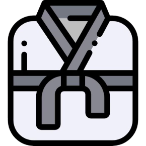

História do judo
Criado em 1882 no Japão, por Jigoro Kano.
➢ Arte marcial adaptada do jujitsu.
➢ O judo masculino tornou-se desporto olímpico, nos Jogos Olímpicos de Munique, em 1972.
➢ O judo feminino tornou-se desporto olímpico em 1992, nos Jogos Olímpicos de Barcelona.
➢ Tem como objetivo fortalecer o corpo e a mente e desenvolver técnicas de defesa.
➢ Destaca-se pela combinação de técnica, rigor e disciplina.
➢ Os atletas são divididos em categorias de acordo com o seu peso.
➢ O Japão é a nação mais bem sucedidada, com um total de 96 medalhas olímpicas, 48 de ouro.